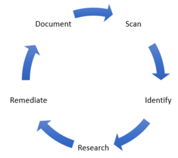
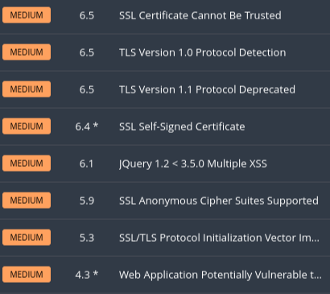
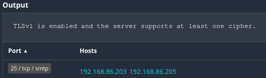
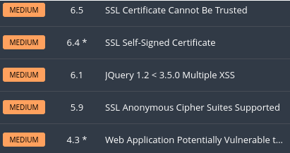

Vulnerability Management 101

Recently a client of mine had another firm perform an external vulnerability scan to satisfy a cyber insurance requirement. This firm identified several systems that either utilized, or could use, TLS 1.0 and 1.1 for secure communications. While this is rated as a “medium” vulnerability it should still be resolved, especially as it was an external vulnerability.
Today I’m going to use that prompt to briefly discuss the basics of Vulnerability Management and walk through an example where I mitigate the identified vulnerabilities on one of my assets.
Vulnerability Management quite simply put is a framework that you follow to find and remediate vulnerabilities within your organization. While this framework is most commonly tied to vulnerability scans and assessments it can be utilized for other types of risks such as physical.
The framework I advocate for is as follows: Scan your assets. Identify the vulnerability. Research solutions to identified vulnerabilities. Remediate the vulnerability. Document the remediation or other outcomes (for example if you accept the risk of the vulnerability and do not remediate it.) Then scan again to continue the process.
The Vulnerability Management process should be a part of your larger Security Program within the organization. It is not a one-time process but meant to be continuous. Parts or all of this process can be owned within the organization or outsourced to trusted partners.
Lets go ahead and walk through this process using a real-world example.
Our first step is to scan our environment with a vulnerability scanner. Having done so I can see that there are indeed vulnerabilities that should be mitigated. Please note that this guide is only going to discuss the remediation of a single vulnerability.

TLS 1.0 and 1.1 are older versions of TLS that have been deprecated1. Services and applications should utilize TLS 1.2 or 1.3 instead. TLS 1.2 has been recommended since 2008 and it is now 2022.
Now that we have identified the vulnerabilities we need to do some research. What asset(s) is affected by this vulnerability? What application or service is this vulnerability affecting? Is there a known remediation for this vulnerability for this application or service?
First we need to identify the assets that are affected by this vulnerability. In my case I did a scan of my homelab network. From the vulnerability scanner report I can clearly identify the affected assets.

From the report my affected assets are 192.168.86.203 and 192.168.86.205. I can also see that the application or service is likely an email server.
Now I can refer to my asset database, also known as a CMDB2 (configuration management database), to identify more information on these assets. From my CMDB I know that these two assets are Ubuntu servers. As these are Ubuntu servers it is likely that the mail server is Postfix.
It could be that I simply need to update the version of Postfix that is installed. That is not the case for this asset. Further research on the Postfix website shows that there is a method for enabling and disabling protocols in the configuration3 file.
We have concluded the research step of this process. We have a remediation plan: Update the Postfix configuration file to enable TLS 1.2 and disable the depreciated protocol version. At this point we can move to the remediation step. Depending on your organization this is where Change Management processes may also come into play. As this is my homelab I will simply make the appropriate changes.
Don’t forget to backup the /etc/postfix/main.cf configuration file!
My default configuration file did not specify the TLS parameters so we’ll need to add them. I used the following lines - this works for my homelab - be sure to do thorough research before performing this step in your organization.
smtp_tls_mandatory_protocols=!SSLv2, !SSLv3, !TLSv1, !TLSv1.1
smtpd_tls_mandatory_protocols=!SSLv2, !SSLv3, !TLSv1, !TLSv1.1
smtp_tls_protocols=!SSLv2, !SSLv3, !TLSv1, !TLSv1.1
smtpd_tls_protocols=!SSLv2, !SSLv3, !TLSv1, !TLSv1.1
After updating the configuration file the Postfix service will need to be restarted. Be aware of the potential outage when scheduling this kind of work in your own organization.
At this point the vulnerability should be resolved. There should also be a trove of documentation ranging from the original scanning reports to your remediation plan. How will we know? We go back to the beginning of the process and scan again to validate that our remediation plan was successful.

We have now successfully remediated this vulnerability.
While this example was specifically geared towards resolving the specific vulnerability with Postfix on an Ubuntu server asset, the vulnerability management framework presented can be applied to any organization and team tasked with identifying and remediating vulnerabilities within the organization.
Footnotes: